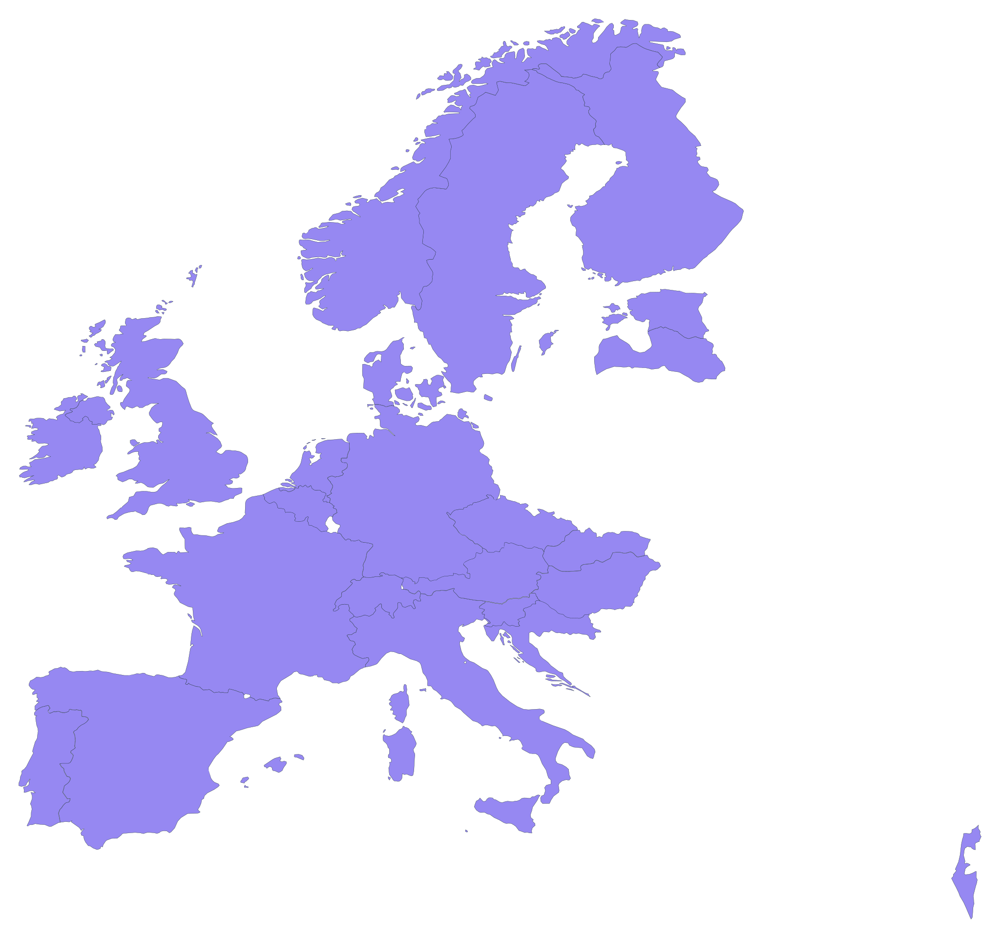

of senior leadership roles in research-adjacent fields are held by white men. Women hold just 15% of managing-director roles globally.
McKinsey & Company (2023)
PeerLadder
A national peer-mentoring initiative supporting underrepresented dRTP leaders
PeerLadder is a new peer-mentoring initiative in the UK.
- Supporting leadership development
- Empowering underrepresented digital Research Technical Professionals (dRTPs)
- Building confidence, community, and inclusive leadership
The team


Why it matters
Diverse teams outperform – but only when people feel safe enough to speak. PeerLadder is built on both findings.
more patent citations from engineering teams with higher diversity, and +19% more revenue – evidence that diverse teams drive research-technical innovation.
Royal Academy of Engineering (2024) · BSA / APPG on Diversity & Inclusion in STEM (2025)The mechanism: psychological safety
Hiring people from underrepresented groups doesn't change outcomes on its own. They have to feel safe to speak, disagree, and admit uncertainty.
Amy Edmondson (Harvard Business School) calls this psychological safety – the variable that makes diversity work.
Google's Project Aristotle studied 180 teams and found psychological safety to be the #1 factor distinguishing high-performing teams.
The three rungs
01
Structured peer-mentoring
Regular small-group sessions with clear agendas, action commitments and accountability.
02
Leadership training from OLS
Skills development through the Open Life Science programme – facilitation, feedback, navigating power.
03
Psychological safety & guidance
Supportive materials and a facilitated space where it's safe to speak about real obstacles.
The cohort
15 dRTPs from 12 UK institutions. Yellow dots on the map = institutions with a current mentee.
Who is in the cohort?
60%women
47%minority ethnic background
27%neurodivergent
⅓lower socioeconomic background
20%main carers
13%LGBTQIA+
dRTP roles in the cohort
- (Senior) Research Software Engineer
- Research Computing Systems Engineer
- Bioinformatics Technical Specialist
- Senior Research IT Business Partner
- Ecological Statistician
- Research Data Technical Specialist
- dRTP community coordinator
- Assistant Professor
Where in ELIXIR would you run it?
Stick a dot on the country where you'd want to host a PeerLadder-style scheme through your ELIXIR Node.

What was your leadership barrier?
Imposter syndrome? No mentor? No time? Bias? Something else? Write it on a post-it and pin it here – anonymous.